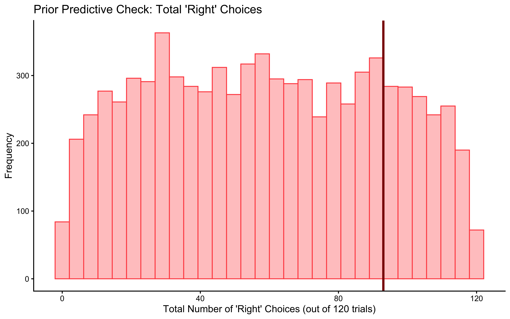
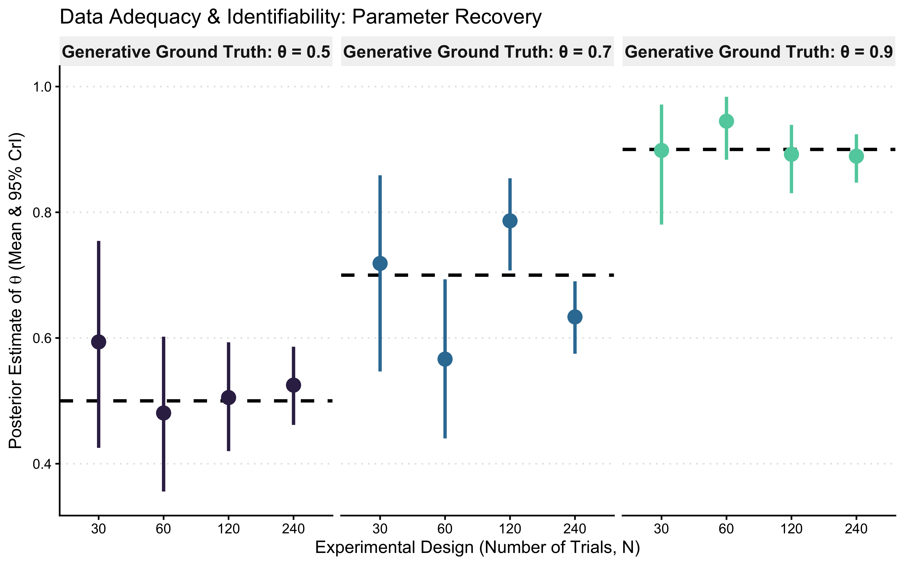
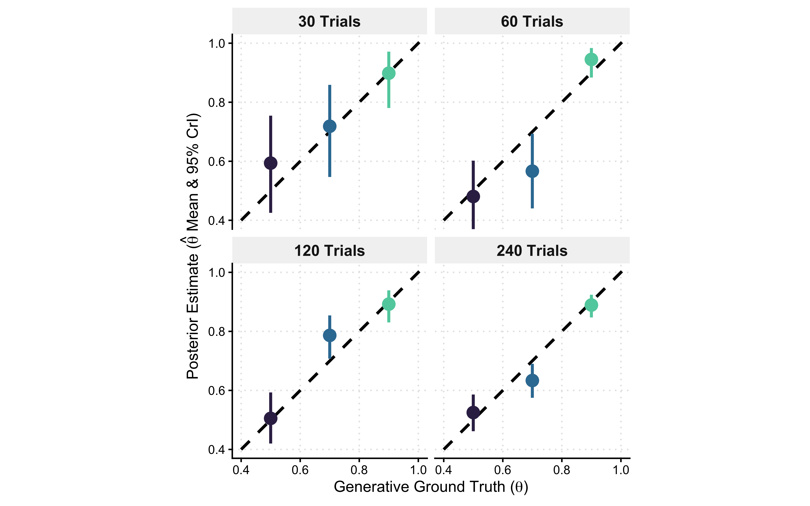
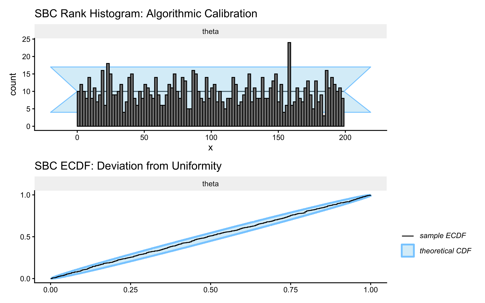
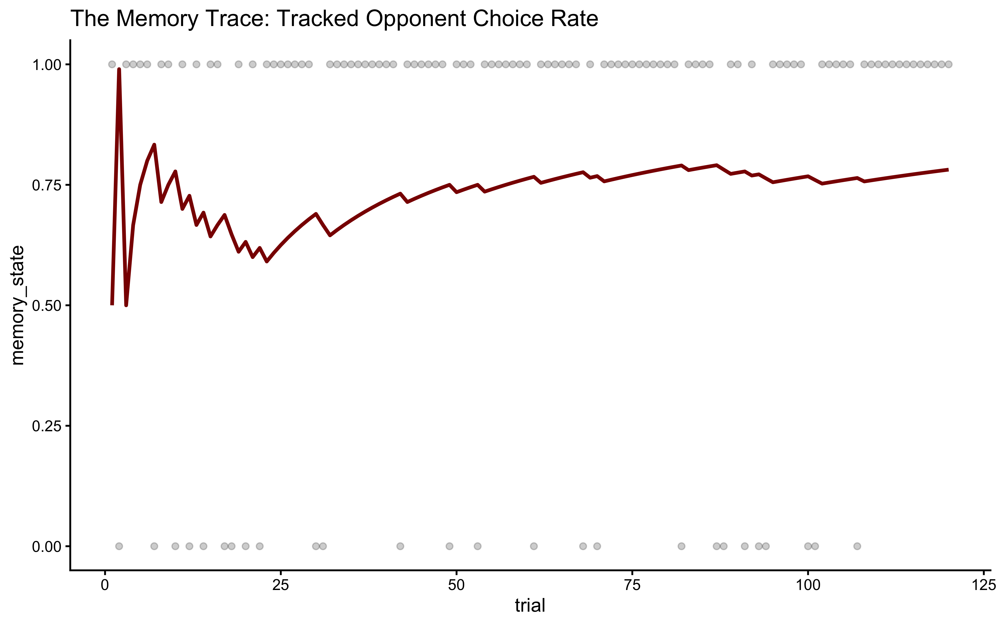
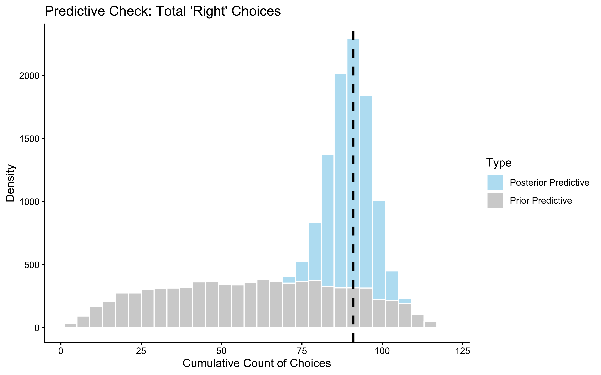
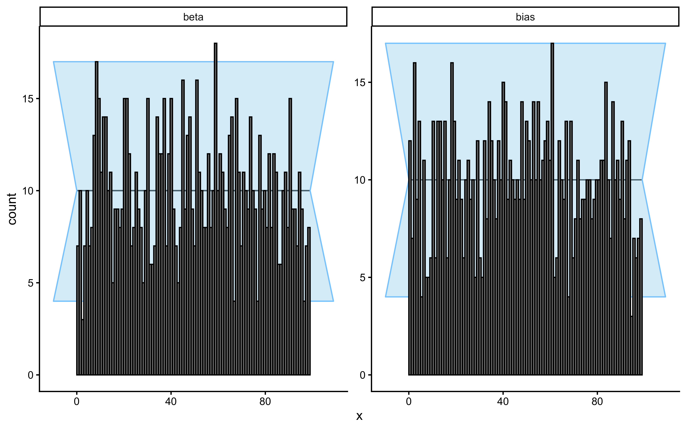

Chapter 6 Chapter 5: Assessing Model Quality
6.1 Learning Goals
In Chapter 4, we learned how to write Stan code and infer parameters for a single simulated dataset. However, obtaining a posterior distribution does not mean the model is correct or the inference is reliable.
This chapter introduces the strict diagnostic battery required to validate any cognitive model. After completing this chapter, you will be able to:
Assess Generative Plausibility (Prior Predictive Checks): Simulate data from your model’s priors before fitting to ensure the mathematical bounds and prior assumptions are physically and cognitively plausible, that is, generate plausible behaviors.
Validate Identifiability (Parameter Recovery): Show that your model can accurately recover known ground-truth parameters across different noise levels.
Calibrate Uncertainty (Simulation-Based Calibration): Use SBC to guarantee your computational engine is unbiased and your posterior uncertainties are mathematically sound.
Perform Posterior Predictive Checks: Simulate data from your fitted model to assess whether it can reproduce key patterns observed in the actual data.
Visualize Prior-Posterior Updates: Compare prior and posterior distributions to understand how the data informed parameter estimates.
Test Robustness (Sensitivity Analysis): Evaluate how sensitive your parameter estimates are to the choice of prior distributions using both manual methods and the
priorsensepackage.
6.2 Introduction: Why Parameter Estimates Aren’t Enough
In the previous chapters, we journeyed from observing behavior (Chapter 2), formalizing strategies (Chapter 3), to fitting models and estimating parameters (Chapter 4).
But how confident are we about the model, its assumptions, the way we coded it? The model itself, the structure we assumed could be mathematically misspecified (not do what we think it does), unidentifiable (produce similar behaviors with an infinite set of combinations of parameter values), and/or simply unable to capture the data (sometimes even the data that we simulated from it!).
While rigorous Bayesian workflows can take many forms, here we will structure our validations in three distinct phases:
Phase 1: Generative Plausibility (The Sanity Check). Before we test the computational engine, we must ensure our model + priors generate plausible behaviors. If simulating the data generates 10,000 (or even just 121) choices for a 120-trial task, there is a problem. If the priors indicate the participants are most likely to only pick ‘left’ or only pick ‘right’ and very unlikely to generate mixtures of these two behaviors, the priors are broken. We use Prior Predictive Checks for this.
Phase 2: Model Criticism & Robustness (The Fit Check). Once the generative space is plausible, we must show that the fitted model capture the nuances of the (simulated) data, and characterize how robust our inference is to choices like the sample size and the values of the priors. This is done with Posterior Predictive Checks, Prior-Posterior Update Visualizations, and Sensitivity Analysis.
Phase 3: Computational Validation (The Engine Check). Once the generative space is plausible, we must prove the math works. If we generate data from this plausible space, can the Stan sampler recover the true parameters? We use Parameter Recovery and SBC here.
This chapter executes these three phases sequentially, using our simple biased agent model as a running example.
6.3 Loading Packages and Previous Results
Let’s start by loading the necessary packages and the fitted model object from Chapter 4. This avoids re-running the fitting process unnecessarily and ensures consistency.
# Load required packages using pacman for efficient package management
# pacman::p_load ensures packages are installed if missing, then loads them
pacman::p_load(
tidyverse, # Core suite for data manipulation (dplyr) and plotting (ggplot2)
here, # For creating robust file paths relative to the project root (optional but good practice)
posterior, # Provides tools for working with posterior distributions
cmdstanr, # The R interface to Stan (via CmdStan)
bayesplot, # Specialized plotting functions for Bayesian models
patchwork, # For easily combining multiple ggplot plots
priorsense, # For automated prior sensitivity analysis
SBC, # Simulation-Based Calibration
future, # Parallel processing
furrr # Parallel mapping
)
# Set a default theme for ggplot for consistency
theme_set(theme_classic()) # Use a classic theme with white background
# Define relative paths
stan_model_dir <- "stan"
stan_results_dir <- "simmodels"
sim_data_dir <- "simdata"
# Create directories if they don't exist (important for first run)
if (!dir.exists(stan_model_dir)) dir.create(stan_model_dir)
if (!dir.exists(stan_results_dir)) dir.create(stan_results_dir)
if (!dir.exists(sim_data_dir)) dir.create(sim_data_dir)6.4 Phase 1: Mathematical Formulation and Stan implementation
Just as a reminder, for our Simple Biased Agent, the generative process across \(n\) trials is defined as: \[h_i \sim \text{Bernoulli}(\theta)\] \[\theta = \text{logit}^{-1}(\theta_{\text{logit}})\] \[\theta_{\text{logit}} \sim \text{Normal}(0, 1.5)\]
Notice our parameterization. By operating on the unconstrained space (\(\theta_{\text{logit}} \in [-\infty, \infty]\)) rather than the constrained probability space (\(\theta \in [0, 1]\)), we avoid boundary effects that can cause the No-U-Turn Sampler (NUTS) to pathologically bounce against parameter limits.
Stan’s default initialization draws uniformly from \([-2, 2]\) on the unconstrained (logit) space. When our models will grow more complex, this arbitrary initialization might be less than optimal and we’ll have to explicitly initialize from the prior or use multi-path variational inference (Pathfinder) if the chains struggle to start.
We will now reproduce the Stan code for the model, and modify it to include the generated quantities block. This block executes after the model has been fitted, and is very useful in our checks as we can generate and save several variables to be used in our model assessment:
the prior (e.g. for visualization in prior-posterior update checks),
simulations of model expectations from the prior only (before exposure to data) for prior predictive checks
simulations of model expectations from the posteriors (after exposure to data), for posterior predictive checks
the log likelihood for each data point, to assess how well they are captured by the model
the joint log prior, which tells us how likely the posterior is given the prior and will be used to assess the sensitivity of the posterior to the choice of priors
Note that we are adding data for the prior parameters, so we can quickly change them without recompiling the model and that we will explain the different additional variables in detail throughout the chapter.
# Stan code of the model, adding generated quantities for predictive checks
stan_model_gq_code <- "
data {
int<lower=1> n; // Number of trials (e.g., 120)
array[n] int<lower=0, upper=1> h; // Observed choices (vector of 0s and 1s)
real prior_theta_m;
real<lower = 0> prior_theta_sd;
}
parameters {
real theta_logit; // Represents the log-odds of choosing option 1 (right)
}
model {
target += normal_lpdf(theta_logit | prior_theta_m, prior_theta_sd); // prior
target += bernoulli_logit_lpmf(h | theta_logit); // likelihood
}
generated quantities {
// Create the prior for theta
real theta_logit_prior = normal_rng(prior_theta_m, prior_theta_sd);
// --- Parameter Transformation ---
real theta_prior = inv_logit(theta_logit_prior);
real<lower=0, upper=1> theta = inv_logit(theta_logit);
// --- Prior Predictive Check Simulation ---
// Simulate data based *only* on the prior distribution.
array[n] int h_prior_rep = bernoulli_logit_rng(rep_vector(theta_logit_prior, n));
// Calculate a summary statistic for this PRIOR replicated dataset.
int<lower=0, upper=n> prior_rep_sum = sum(h_prior_rep);
// --- Posterior Predictive Check Simulation ---
// Simulate data based on the *posterior* distribution of the parameter.
array[n] int h_post_rep = bernoulli_logit_rng(rep_vector(theta_logit, n));
// Calculate a summary statistic for this posterior dataset.
int<lower=0, upper=n> post_rep_sum = sum(h_post_rep);
// --- Log-likelihood ---
vector[n] log_lik;
real lprior;
// log likelihood
for (i in 1:n) log_lik[i] = bernoulli_logit_lpmf(h[i] | theta_logit);
// joint log prior
lprior = normal_lpdf(theta_logit | prior_theta_m, prior_theta_sd);
}
"
stan_file_gq <- file.path(stan_model_dir, "05_SimpleBernoulli_GQ.stan")
writeLines(stan_model_gq_code, stan_file_gq)
# Define path for saving/loading the fitted model object that includes the generated quantities
model_file_gq <- file.path(stan_results_dir, "05_SimpleBernoulli_GQ.rds")
# Generate the required data
# Load the simulation data used in Chapter 4
sim_data_file <- file.path(sim_data_dir, "W4_randomnoise.csv")
d <- read_csv(sim_data_file, show_col_types = FALSE)
# Subset data for the specific agent fitted in Chapter 4 (rate=0.8, noise=0)
d1 <- d %>% filter(true_rate == 0.8, true_noise == 0.0)
trials <- nrow(d1)
# Prepare the observed data list in the format Stan expects
observed_data_list <- list(
n = trials, # Number of trials (integer)
h = d1$choice, # Vector of observed choices (0s and 1s)
prior_theta_m = 0, # Mean of the prior for theta_logit
prior_theta_sd = 1.5 # Standard deviation of the prior for theta_logit
)
# Check if we need to re-run the fitting process based on the flag or file existence
if (regenerate_simulations || !file.exists(model_file_gq)) {
mod_gq <- cmdstan_model(stan_file_gq)
# Sample from the posterior distribution using MCMC
fit_gq <- mod_gq$sample(
data = observed_data_list, # The observed data list prepared earlier
seed = 123, # Set seed for reproducible MCMC results
chains = 4, # Number of independent Markov chains (4 is standard)
parallel_chains = min(4, future::availableCores()), # Run chains in parallel using available cores
iter_warmup = 1000, # Number of warmup iterations per chain (discarded)
iter_sampling = 2000, # Number of sampling iterations per chain (kept)
refresh = 500, # How often to print progress updates to the console
max_treedepth = 10, # MCMC tuning parameter (controls step complexity)
adapt_delta = 0.8 # MCMC tuning parameter (target acceptance rate)
)
# Save the fitted model object (including samples and generated quantities)
fit_gq$save_object(file = model_file_gq)
} else {
# Load the previously saved fitted model object
fit_gq <- readRDS(model_file_gq)
}## Running MCMC with 4 parallel chains...
##
## Chain 1 Iteration: 1 / 3000 [ 0%] (Warmup)
## Chain 1 Iteration: 500 / 3000 [ 16%] (Warmup)
## Chain 1 Iteration: 1000 / 3000 [ 33%] (Warmup)
## Chain 1 Iteration: 1001 / 3000 [ 33%] (Sampling)
## Chain 1 Iteration: 1500 / 3000 [ 50%] (Sampling)
## Chain 1 Iteration: 2000 / 3000 [ 66%] (Sampling)
## Chain 1 Iteration: 2500 / 3000 [ 83%] (Sampling)
## Chain 1 Iteration: 3000 / 3000 [100%] (Sampling)
## Chain 2 Iteration: 1 / 3000 [ 0%] (Warmup)
## Chain 2 Iteration: 500 / 3000 [ 16%] (Warmup)
## Chain 2 Iteration: 1000 / 3000 [ 33%] (Warmup)
## Chain 2 Iteration: 1001 / 3000 [ 33%] (Sampling)
## Chain 2 Iteration: 1500 / 3000 [ 50%] (Sampling)
## Chain 2 Iteration: 2000 / 3000 [ 66%] (Sampling)
## Chain 2 Iteration: 2500 / 3000 [ 83%] (Sampling)
## Chain 2 Iteration: 3000 / 3000 [100%] (Sampling)
## Chain 3 Iteration: 1 / 3000 [ 0%] (Warmup)
## Chain 3 Iteration: 500 / 3000 [ 16%] (Warmup)
## Chain 3 Iteration: 1000 / 3000 [ 33%] (Warmup)
## Chain 3 Iteration: 1001 / 3000 [ 33%] (Sampling)
## Chain 3 Iteration: 1500 / 3000 [ 50%] (Sampling)
## Chain 3 Iteration: 2000 / 3000 [ 66%] (Sampling)
## Chain 3 Iteration: 2500 / 3000 [ 83%] (Sampling)
## Chain 3 Iteration: 3000 / 3000 [100%] (Sampling)
## Chain 4 Iteration: 1 / 3000 [ 0%] (Warmup)
## Chain 4 Iteration: 500 / 3000 [ 16%] (Warmup)
## Chain 4 Iteration: 1000 / 3000 [ 33%] (Warmup)
## Chain 4 Iteration: 1001 / 3000 [ 33%] (Sampling)
## Chain 4 Iteration: 1500 / 3000 [ 50%] (Sampling)
## Chain 4 Iteration: 2000 / 3000 [ 66%] (Sampling)
## Chain 1 finished in 0.1 seconds.
## Chain 2 finished in 0.1 seconds.
## Chain 3 finished in 0.1 seconds.
## Chain 4 Iteration: 2500 / 3000 [ 83%] (Sampling)
## Chain 4 Iteration: 3000 / 3000 [100%] (Sampling)
## Chain 4 finished in 0.1 seconds.
##
## All 4 chains finished successfully.
## Mean chain execution time: 0.1 seconds.
## Total execution time: 2.5 seconds.6.4.1 The Mandatory MCMC Diagnostic Battery
Before we even look at a posterior distribution, we must prove the geometry of the posterior was successfully explored. We have zero tolerance for divergences. If a divergence occurs, the NUTS trajectory has departed from the true posterior manifold, indicating a biased approximation.
# Extract the summary and diagnostics from our fitted model object
fit_summary <- fit_gq$summary()
diagnostic_summary <- fit_gq$diagnostic_summary()
# 1. Check for Divergent Transitions (Zero Tolerance)
divergences <- sum(diagnostic_summary$num_divergent)
if (divergences > 0) {
stop(paste("CRITICAL FAILURE:", divergences, "divergences detected. The posterior geometry is pathological. Reparameterization required. Do not interpret these results."))
}
# 2. Check E-BFMI (Energy-Bayesian Fraction of Missing Information)
# Threshold is typically 0.3. Values below this indicate poor exploration.
min_ebfmi <- min(diagnostic_summary$ebfmi)
if (min_ebfmi < 0.3) {
warning(paste("WARNING: Low E-BFMI detected (Min =", round(min_ebfmi, 3),
"). The sampler may struggle to explore the tails of the posterior."))
}
# 3. Check for Convergence (Rhat < 1.01)
max_rhat <- max(fit_summary$rhat, na.rm = TRUE)
if (max_rhat > 1.01) {
stop(paste("CRITICAL FAILURE: Chains did not converge. Max Rhat =", round(max_rhat, 3)))
}
# 4. Check Effective Sample Size (ESS > 400 for both bulk and tail)
min_ess_bulk <- min(fit_summary$ess_bulk, na.rm = TRUE)
min_ess_tail <- min(fit_summary$ess_tail, na.rm = TRUE)
if (min_ess_bulk < 400 || min_ess_tail < 400) {
warning("WARNING: Insufficient Effective Sample Size. Autocorrelation is too high. Run longer chains.")
}6.5 Phase 2: Generative Plausibility (Prior Predictive Checks)
Before fitting the model, we specified prior distributions for our parameters (e.g., \(\theta_{\text{logit}} \sim \text{Normal}(0, 1.5)\)). Priors do not merely encode our initial uncertainty before seeing the data; they are fundamental constraints on the data-generating process. Prior predictive checks help us understand the implications of these choices. If we simulate data using only parameters drawn from our priors, what kind of data does the model expect before seeing any actual observations?
6.5.1 The Generative Algorithm:
To assess generative plausibility, we explicitly simulate from the joint distribution of the model:
Draw from the Prior: Sample \(S\) parameter values from their respective prior distributions. For example: \(\theta_{\text{logit}}^{(s)} \sim \text{Normal}(0, 1.5)\).
Transform to Constrained Space: Push these unconstrained values through the inverse-link function to map them to the cognitive parameter space (probability): \(\theta^{(s)} = \text{logit}^{-1}(\theta_{\text{logit}}^{(s)})\).
Simulate the Likelihood: Using these prior parameter values, simulate a replicated dataset from the data-generating function: \(y_{\text{prior}}^{(s)} \sim \text{Bernoulli}(\theta^{(s)})\).
Evaluate Summary Statistics: Calculate theoretically relevant summary statistics, \(T(y_{\text{prior}}^{(s)})\), and plot their distribution.
This protocol reveals the limits of our assumptions. We must interrogate this space: Are we inadvertently generating boundary-saturating behaviors? If our prior allows the agent to generate 120 “left” choices and 0 “right” choices with high frequency, we have likely specified a prior that is too wide on the logit scale, pushing the probability mass into the extreme tails of 0 and 1.
6.5.2 Performing the Prior Predictive Check:
We have already embedded the generative simulation (h_prior_rep) and the summary statistic calculation (prior_rep_sum) directly into the Stan generated quantities block. We will now extract these draws and visualize the geometry of our prior predictions.
# Extract the summary statistic calculated from prior predictive simulations
# 'prior_rep_sum' was calculated within the generated quantities block
draws_gq <- as_draws_df(fit_gq$draws()) # Ensure we have the draws as a dataframe
observed_sum <- sum(observed_data_list$h) # Total number of 'right' choices in the actual observed data
ppc_prior_ggplot <- ggplot(draws_gq, aes(x = prior_rep_sum)) +
# Draw the histogram of the model's prior predictions (light red)
geom_histogram(fill = "#ffbaba", color = "#ff5252", bins = 30, alpha = 0.8) +
# Add the vertical line for the actual observed data (dark red)
geom_vline(xintercept = observed_sum, color = "darkred", linewidth = 1.2) +
# Labels and theming
ggtitle("Prior Predictive Check: Total 'Right' Choices") +
xlab(paste("Total Number of 'Right' Choices (out of", trials, "trials)")) +
ylab("Frequency") +
theme_classic()
ppc_prior_ggplot
** Interpretation**: The prior predictive distribution (red histogram) shows the generative space induced by our prior: the wide range of outcomes (total ‘right’ choices) considered possible by the model before seeing the data, driven solely by the Normal(0, 1.5) prior on theta_logit. Recall that a weakly informative prior on the logit scale maps to a relatively uniform distribution over the probability space \([0, 1]\). Consequently, the predicted outcomes cover the full domain of possible trial sums, centered symmetrically around chance performance (\(60\) ‘right’ choices out of \(120\)). Thus, our generative structure does not seem biased prior to observing empirical data, except for the discount of extreme behaviors.
6.6 Phase 3: Posterior Predictive Checks - Does the Fitted Model Resemble the Data?
Now that we’ve examined the prior implications, let’s perform the posterior predictive check. The fundamental question of model adequacy is: Conditional on the data we observed, can the inferred data-generating process replicate the key structural features of our data?
6.6.1 The Generative Algorithm:
The algorithm mirrors the prior predictive check, but instead of sampling from the prior, we condition on the learned posterior \(p(\theta \mid y)\):
Draw from the Posterior: For each MCMC sample \(s\), take the inferred parameter \(\theta^{(s)}\).
Simulate Replications: Generate a synthetic dataset \(y_{\text{rep}}^{(s)}\) of the exact same dimensions as the empirical data, using the assumed likelihood:\[y_{\text{rep}}^{(s)} \sim \text{Bernoulli}(\theta^{(s)})\]
Evaluate Test Statistics: Calculate theoretically relevant summary statistics \(T(y_{\text{rep}}^{(s)})\) and compare them against the empirical statistic \(T(y)\).
We must interrogate these predictions critically. Our model assumes independent, identically distributed (i.i.d.) Bernoulli trials. But what if the participant exhibited sequential dependencies, such as a “win-stay/lose-shift” strategy? If so, our model might successfully capture the overall choice proportion (the sum), but it will fail catastrophically to reproduce the sequential structure (e.g., the maximum run-length of identical choices).
6.6.2 Performing the Posterior Predictive Check:
We extract the replicated datasets (h_post_rep) generated simultaneously within the Stan generated quantities block. We will then systematically compare the test statistic distributions \(T(y_{\text{rep}})\) against our empirical ground truth \(T(y)\).
# Extract posterior predictive simulations from the fitted object
# This matrix has dimensions: [number_of_draws, number_of_trials]
h_post_rep <- fit_gq$draws("h_post_rep", format = "matrix")
# Calculate the test statistic T(y) for the *actual* empirical data
observed_sum <- sum(observed_data_list$h)
# Calculate the test statistic T(y_rep) for *each* replicated dataset
# We compute the row-wise sum across the posterior draws
post_rep_sums <- rowSums(h_post_rep)
# Bundle into a tibble for strictly structured plotting
ppc_df <- tibble(
Replicated_Sum = post_rep_sums
)
# --- Graphical Posterior Predictive Check using ggplot2 ---
ppc_posterior_ggplot <- ggplot(ppc_df, aes(x = Replicated_Sum)) +
geom_histogram(fill = "skyblue", color = "white", alpha = 0.7, bins = 30) +
geom_vline(xintercept = observed_sum, color = "black", linetype = "dashed", linewidth = 1) +
ggtitle("Posterior Predictive Check: Total 'Right' Choices") +
xlab(paste("Total Number of 'Right' Choices (out of", trials, "trials)")) +
ylab("Frequency (Replicated Datasets)") +
# Add annotation for the empirical ground truth
annotate(
"text", x = observed_sum, y = Inf,
label = "Empirical data",
vjust = 2, hjust = if(observed_sum > trials/2) 1.1 else -0.1,
size = 4, fontface = "bold"
) +
theme_classic()
ppc_posterior_ggplot
ppc_overlay_df <- tibble(
Replicated_Sum = c(draws_gq$prior_rep_sum, post_rep_sums),
Distribution = factor(
rep(c("Prior Predictive", "Posterior Predictive"), each = length(post_rep_sums)),
levels = c("Prior Predictive", "Posterior Predictive")
)
)
# 2. Generate the overlay plot
ppc_overlay_ggplot <- ggplot(ppc_overlay_df, aes(x = Replicated_Sum, fill = Distribution)) +
# Use position = "identity" and alpha to ensure both distributions are visible
geom_histogram(position = "identity", alpha = 0.6, color = "white", bins = 30) +
geom_vline(xintercept = observed_sum, color = "black", linetype = "dashed", linewidth = 1) +
scale_fill_manual(values = c("Prior Predictive" = "#ffbaba", "Posterior Predictive" = "skyblue")) +
ggtitle("Generative Evolution: Prior vs. Posterior Predictive Checks") +
xlab(paste("Total Number of 'Right' Choices (out of", trials, "trials)")) +
ylab("Frequency (Replicated Datasets)") +
# Add annotation for the empirical ground truth
annotate(
"text", x = observed_sum, y = Inf,
label = "Empirical data",
vjust = 2, hjust = if(observed_sum > trials/2) 1.1 else -0.1,
size = 4, fontface = "bold"
) +
theme_classic() +
theme(
legend.position = "bottom",
legend.title = element_blank(),
legend.text = element_text(size = 12)
)
print(ppc_overlay_ggplot)
# --- Example of checking another statistic (e.g., max run length) ---
# Define a function to calculate the maximum run length in a vector
max_run_length <- function(x) {
if (length(x) == 0 || all(is.na(x))) return(0)
rle_x <- rle(x) # Run Length Encoding calculates consecutive identical choices
if (length(rle_x$lengths) == 0) return(0)
max(rle_x$lengths)
}
# 2. Calculate the empirical test statistic T(y)
observed_max_run <- max_run_length(observed_data_list$h)
# 3. Extract prior replicated matrices and compute T(y_rep) for the prior
# h_prior_rep is an S x N matrix generated from the prior distributions
h_prior_rep <- fit_gq$draws("h_prior_rep", format = "matrix")
prior_max_runs <- apply(h_prior_rep, 1, max_run_length)
# 4. Extract posterior replicated matrices and compute T(y_rep) for the posterior
# h_post_rep is an S x N matrix generated from the posterior distributions
h_post_rep <- fit_gq$draws("h_post_rep", format = "matrix")
post_max_runs <- apply(h_post_rep, 1, max_run_length)
# 5. Bundle into a strictly structured tibble for overlay plotting
ppc_run_df <- tibble(
Replicated_Max_Run = c(prior_max_runs, post_max_runs),
Distribution = factor(
rep(c("Prior Predictive", "Posterior Predictive"), each = length(post_max_runs)),
levels = c("Prior Predictive", "Posterior Predictive")
)
)
# 6. Generate the overlay plot
p_ppc_max_run <- ggplot(ppc_run_df, aes(x = Replicated_Max_Run, fill = Distribution)) +
geom_histogram(position = "identity", alpha = 0.6, color = "white", bins = 20) +
geom_vline(xintercept = observed_max_run, color = "black", linetype = "dashed", linewidth = 1) +
scale_fill_manual(values = c("Prior Predictive" = "#ffbaba", "Posterior Predictive" = "skyblue")) +
ggtitle("Generative Evolution: Prior vs. Posterior (Maximum Run Length)") +
xlab("Test Statistic T(y_rep): Maximum Run Length of Consecutive Choices") +
ylab("Frequency (Replicated Datasets)") +
# Add annotation for the empirical ground truth
annotate(
"text", x = observed_max_run, y = Inf,
label = "Empirical T(y)",
vjust = 2, hjust = -0.1,
size = 4, fontface = "bold"
) +
theme_classic() +
theme(
legend.position = "bottom",
legend.title = element_blank(),
legend.text = element_text(size = 12)
)
print(p_ppc_max_run)
Interpretation: By evaluating the joint posterior predictive space, we observe that the synthetic datasets \(y_{\text{rep}}\) generated by our fitted model successfully recover both the marginal choice proportion (\(T(y) = \sum y_i\)) and the sequential dependency structure (the maximum run length) of our empirical ground truth.Because both empirical test statistics \(T(y)\) fall comfortably within the high-density regions of our posterior predictive distributions, we have show the simple biased agent is a plausible model for this dataset (duh!). More technically, we failed to falsify the generative assumptions of the Simple Biased Agent for this specific dataset.
Critically, the survival of the maximum run length check is our most important structural victory here. It mathematically indicates that our fundamental assumption of exchangeability (that these are independent, identically distributed Bernoulli trials) is not catastrophically violated. The agent’s choice sequence does not exhibit severe unmodeled autocorrelation, “win-stay/lose-shift” dynamics, or deterministic alternation that would necessitate a more complex, state-dependent parameterization. Therefore, we may proceed with cautious confidence that this strictly stationary model provides an adequate, mathematically principled description of the observed behavior.
This is not a surprise in our case :-) You might wonder whether testing the model on one simulated dataset (biased agent with a theta of 0.8) is sufficient. You might get bad fits and wonder what to do next. In practice, we start with one dataset to ensure we have no major issue, but we will soon get into systematic testing across many parameter values! just wait a little longer.
6.7 Phase 4: Epistemic Updating (Prior-Posterior Update Checks) - How Much Did the Data Change our Beliefs?
This check visualizes the core engine of Bayesian inference: the formal mathematical updating of our structural assumptions by the empirical evidence. Conceptually, we are observing Bayes’ theorem in action as we transition from the prior \(p(\theta)\) to the posterior \(p(\theta \mid y) \propto p(y \mid \theta) p(\theta)\).
By explicitly plotting the marginal prior distribution against the marginal posterior distribution for our parameters, we must interrogate two critical epistemic properties:
Information Gain: How aggressively did the likelihood \(p(y \mid \theta)\) compress the variance of the prior? If the posterior distribution is substantially narrower (higher precision) than the prior, the empirical data possessed high informational value and strongly constrained our parameter estimates.
Prior Influence: Did the central tendency of the posterior shift significantly away from the prior mean? If the posterior sort of mirrors the prior, we must ask a deep structural question: Did the data provide too little informational value, or was our prior so strong that it overwhelmed the likelihood?
We will inspect this transformation on both the unconstrained space defined by our model (\(\theta_{\text{logit}} \in \mathbb{R}\)) and the conceptually intuitive probability space (\(\theta \in [0, 1]\)).
# Extract MCMC draws into a structured dataframe
draws_gq <- as_draws_df(fit_gq$draws())
# 2. Define the empirical ground truth for reference
true_theta_prob <- 0.8
true_theta_logit <- qlogis(true_theta_prob)
# --- The Computational (Unconstrained) Space ---
update_logit_df <- tibble(
Parameter_Value = c(draws_gq$theta_logit_prior, draws_gq$theta_logit),
Distribution = factor(
rep(c("Prior", "Posterior"), each = nrow(draws_gq)),
levels = c("Prior", "Posterior")
)
)
# Generate the overlay density plot for the logit space
p_update_logit <- ggplot(update_logit_df, aes(x = Parameter_Value, fill = Distribution)) +
geom_density(alpha = 0.6, color = "white") +
geom_vline(xintercept = true_theta_logit, color = "black", linetype = "dashed", linewidth = 1) +
scale_fill_manual(values = c("Prior" = "#ffbaba", "Posterior" = "skyblue")) +
ggtitle("Epistemic Update: Unconstrained Space (Logit)") +
xlab(expression(theta[logit] ~ " (Log-Odds)")) +
ylab("Marginal Density") +
annotate(
"text", x = true_theta_logit, y = Inf,
label = "Ground Truth",
vjust = 2, hjust = if (true_theta_logit > 0) 1.1 else -0.1,
size = 4, fontface = "bold"
) +
theme_classic() +
theme(
legend.position = "bottom",
legend.title = element_blank(),
legend.text = element_text(size = 12)
)
print(p_update_logit)
# --- The Cognitive (Constrained) Space ---
# We use plogis() to push the unconstrained prior simulations through the inverse-link function.
update_prob_df <- tibble(
Parameter_Value = c(plogis(draws_gq$theta_logit_prior), draws_gq$theta),
Distribution = factor(
rep(c("Prior", "Posterior"), each = nrow(draws_gq)),
levels = c("Prior", "Posterior")
)
)
# Generate the overlay density plot for the probability space
p_update_prob <- ggplot(update_prob_df, aes(x = Parameter_Value, fill = Distribution)) +
geom_density(alpha = 0.6, color = "white") +
geom_vline(xintercept = true_theta_prob, color = "black", linetype = "dashed", linewidth = 1) +
scale_fill_manual(values = c("Prior" = "#ffbaba", "Posterior" = "skyblue")) +
coord_cartesian(xlim = c(0, 1)) + # Mathematically enforce the [0, 1] bounds
ggtitle("Epistemic Update: Cognitive Space (Probability)") +
xlab(expression(theta ~ " (Probability of 'Right' Choice)")) +
ylab("Marginal Density") +
annotate(
"text", x = true_theta_prob, y = Inf,
label = "Ground Truth",
vjust = 2, hjust = if (true_theta_prob > 0.5) 1.1 else -0.1,
size = 4, fontface = "bold"
) +
theme_classic() +
theme(
legend.position = "bottom",
legend.title = element_blank(),
legend.text = element_text(size = 12)
)
print(p_update_prob)
Interpretation: Interpretation of Epistemic Updating: As visualized above, the posterior distribution (skyblue) is structurally narrower than the prior (light red) and its central tendency has decoupled from the prior mean, anchoring firmly over the true generative value. Mathematically, this confirms a massive information gain: the \(120\) empirical trials provided sufficient likelihood mass to overcome our initial structural assumptions. If the posterior had mirrored the prior, we would be forced to conclude our data lacked the informational power to teach the model anything new.
Now that we have a better feel for the model, it is high time to go beyond one dataset and one prior, and be systematic about testing the model across a wide range of parameter values and prior specifications. We will first assess the sensitivity of our model to prior values to then proceed onto parameter recovery.
6.8 Phase 5: Prior Sensitivity Analysis - Do Priors Matter Too Much?
The next validation check addresses a critical epistemic vulnerability: Are our structural conclusions pathologically dependent on the specific mathematical bounds of our chosen prior? If we had specified a tighter regularizing prior or a completely diffuse one, would our estimate of the cognitive parameter \(\theta\) change drastically? We must explicitly investigate the robustness of our inference by perturbing the prior space and observing the resulting posterior geometry.
6.8.1 5a. Empirical Prior Perturbation (Manual Sensitivity Check)
The Mathematical Algorithm:
Define a Perturbation Grid: Specify a set of alternative, scientifically plausible prior distributions for the parameter of interest. For example, if our baseline is \(\theta_{\text{logit}} \sim \text{Normal}(0, 1.0)\), we might test a highly restrictive prior, \(\text{Normal}(0, 0.5)\), and a diffuse prior, \(\text{Normal}(0, 2.0)\).
Re-compute the Posterior: Fit the generative model to the data under each alternative prior specification to obtain \(p(\theta \mid y, \text{prior}_k)\).
Evaluate Invariance: Overlay and compare the resulting marginal posterior distributions.
Decision Rule: If the marginal posteriors are mathematically invariant (nearly identical) across the perturbation grid, our inference is computationally robust. The likelihood function contains sufficient information to overwhelm the prior constraints. Conversely, if the posteriors shift drastically, our inference is fragile. A fragile model demands that we either mathematically justify our exact prior specification, acknowledge the severe uncertainty in our conclusions, or collect a larger empirical sample. However, it’s also important to remember that in many contexts influential priors are a good choice: to regularize inference, to incorporate strong domain knowledge and/or assess the distance between our results and the previous literature, etc. See this talk for more: https://youtu.be/kMSrRd4f2As?si=-7bbx3wFWobgxebQ
6.8.1.1 Computational Implementation:
To execute this efficiently, we have modified our Stan model to accept the prior’s mean and standard deviation directly via the data block. This parameterization allows us to loop through our grid of alternative \(\sigma\) values in R, iteratively updating the posterior without forcing a costly C++ recompilation of the model at each step.
# We test 3 location parameters (means) and 10 scale parameters (SDs)
prior_grid <- tidyr::expand_grid(
prior_m = c(-1.5, 0, 1.5),
prior_sd = seq(0.5, 3.0, length.out = 10)
)
sensitivity_draws_file <- file.path(stan_results_dir, "W5_sensitivity_draws.rds")
# Check if we need to re-run the sensitivity analysis
if (regenerate_simulations || !file.exists(sensitivity_results_file)) {
fit_and_extract <- function(prior_m, prior_sd, seed_val) {
# Dynamically inject the perturbed parameters into the data list
current_data_list <- observed_data_list
current_data_list$prior_theta_m <- prior_m
current_data_list$prior_theta_sd <- prior_sd
# Fit using the original compiled model
fit <- mod_gq$sample(
data = current_data_list,
chains = 1,
parallel_chains = 1,
iter_warmup = 1000,
iter_sampling = 3000,
refresh = 0,
adapt_delta = 0.8,
show_messages = FALSE
)
draws_df <- fit$draws("theta", format = "df")
# Return a strictly structured tibble, discarding the fragile fit object
tibble::tibble(
theta_prob = draws_df$theta,
prior_m = prior_m,
prior_sd = prior_sd
)
}
# 3. Establish the parallel backend
# We reserve 2 cores to keep the operating system stable.
future::plan(future::multisession, workers = parallel::detectCores() - 2)
# 4. Execute the parallel mapping
# future_pmap now returns a list of dataframes, not CmdStanR objects
draws_list <- furrr::future_pmap(
prior_grid,
fit_and_extract,
.options = furrr::furrr_options(seed = TRUE) # Ensure safe parallel RNG
)
# 5. Collapse the list of dataframes into a single tidy dataframe
sensitivity_draws <- dplyr::bind_rows(draws_list)
# Shut down the parallel backend to free up RAM
future::plan(future::sequential)
# Save the indestructible, pure data
saveRDS(sensitivity_draws, sensitivity_draws_file)
} else {
sensitivity_fits <- readRDS(sensitivity_file)
cat("Loaded existing perturbation grid from:", sensitivity_file, "\n")
}
p_sensitivity_2d <- ggplot(sensitivity_draws, aes(x = theta_prob, group = factor(prior_sd), color = prior_sd)) +
geom_line(stat = "density", alpha = 0.8, linewidth = 0.8) +
geom_vline(xintercept = true_theta_prob, color = "black", linetype = "dashed", linewidth = 1) +
facet_wrap(~ prior_m, labeller = labeller(prior_m = function(x) paste0("Prior Mean (Logit): ", x))) +
scale_color_viridis_c(option = "mako", name = expression(Prior ~ sigma)) +
coord_cartesian(xlim = c(0.4, 1.0)) +
ggtitle("Epistemic Robustness: 2D Prior Perturbation Grid") +
xlab(expression(theta ~ " (Probability scale)")) +
ylab("Marginal Density") +
theme_classic() +
theme(
legend.position = "bottom",
strip.background = element_rect(fill = "gray95", color = "NA"),
strip.text = element_text(face = "bold", size = 11)
)
p_sensitivity_2d
sensitivity_summary <- sensitivity_draws |>
dplyr::group_by(prior_m, prior_sd) |>
dplyr::summarize(
post_mean = mean(theta_prob),
# The 95% CrI (Outer Ribbon)
lower_95 = quantile(theta_prob, 0.025),
upper_95 = quantile(theta_prob, 0.975),
# The 68% CrI (~1 Standard Deviation, Inner Ribbon)
lower_68 = quantile(theta_prob, 0.16),
upper_68 = quantile(theta_prob, 0.84),
.groups = "drop"
) |>
# Create strict, mathematically explicit facet labels
dplyr::mutate(
prior_m_label = factor(
prior_m,
levels = c(-1.5, 0, 1.5),
labels = c("Prior \u03bc = -1.5 (Strong Left Bias)",
"Prior \u03bc = 0 (Neutral)",
"Prior \u03bc = 1.5 (Strong Right Bias)")
)
)
# 2. Generate the bounded trajectory plot with graded topological ribbons
p_sensitivity_trajectory <- ggplot(sensitivity_summary, aes(x = prior_sd, y = post_mean)) +
# The generative ground truth is our invariant reference line
geom_hline(yintercept = true_theta_prob, color = "black", linetype = "dashed", linewidth = 1) +
# The 95% Credible Interval (Outer Ribbon, Highly Transparent)
geom_ribbon(aes(ymin = lower_95, ymax = upper_95, fill = prior_m_label), alpha = 0.15) +
# The 68% Credible Interval (~1 SD, Inner Ribbon, More Opaque)
geom_ribbon(aes(ymin = lower_68, ymax = upper_68, fill = prior_m_label), alpha = 0.35) +
# The posterior mean trajectory
geom_line(aes(color = prior_m_label), linewidth = 1) +
geom_point(aes(color = prior_m_label), size = 2) +
# Structural faceting
facet_wrap(~ prior_m_label) +
scale_color_viridis_d(option = "mako", begin = 0.3, end = 0.7) +
scale_fill_viridis_d(option = "mako", begin = 0.3, end = 0.7) +
coord_cartesian(ylim = c(0.5, 1.0)) + # Zoom to the scientifically relevant probability bounds
# Pedagogical labeling
ggtitle("Epistemic Trajectory: Graded Posterior Estimates across Prior Perturbations") +
xlab(expression("Prior Standard Deviation (" * sigma * ") -> Increasing Diffuseness")) +
ylab(expression("Posterior Estimate of " * theta * " (Mean, 68%, and 95% CrI)")) +
theme_classic() +
theme(
legend.position = "none", # Redundant with facet labels
strip.background = element_rect(fill = "gray95", color = "NA"),
strip.text = element_text(face = "bold", size = 11),
# Add light y-grid lines to help the eye track the shrinkage
panel.grid.major.y = element_line(color = "gray90", linetype = "dotted")
)
print(p_sensitivity_trajectory)
6.8.2 5b. Sensitivity Analysis using priorsense
Executing a computationally heavy 30-model grid is acceptable for a single-parameter Bernoulli process, but what happens when we transition to high-dimensional hierarchical structures in later chapter? The computational cost of manual grid searches becomes prohibitive.
To solve this, we rely on the priorsense package, which elegantly estimates prior sensitivity directly from the original model fit without requiring a single MCMC re-run. It achieves this via power-scaling, a mathematical technique that analytically down-weights alternatively the likelihood and the prior to simulate how the posterior would deform under different epistemic conditions. Conceptually, it evaluates the perturbed posterior:
\[p(\theta \mid y) \propto p(y \mid \theta)^{\alpha} p(\theta)^{\beta}\]
where \(\alpha\) and \(\beta\) are scaling factors.
6.8.2.1 Conceptual Idea:
Baseline Fit: Fit the model once using your principled, generative priors.
Importance Sampling: Use priorsense::powerscale_sensitivity to apply Pareto-smoothed importance sampling (PSIS). This analytically estimates the posterior geometry under perturbed scaling factors (\(\alpha \neq 1, \beta \neq 1\)).
Compute Sensitivity (\(\psi\)): The algorithm calculates specific diagnostic metrics, such as sensitivity_psi. This metric quantifies the gradient of change: how much does the posterior mean shift (relative to its standard deviation) when the prior is perturbed?
Epistemic Diagnosis: High sensitivity values (e.g., \(\psi > 0.1\)) indicate structural fragility. This suggests either that the prior is pathologically dominating the likelihood, or that the prior and likelihood are fundamentally in conflict (prior-data conflict).
# We run prior sense
sensitivity_summary <- priorsense::powerscale_sensitivity(fit_gq)
# we extract the variable of interest
theta_metrics <- sensitivity_summary |>
dplyr::filter(variable == "theta")
cat("\n--- Epistemic Diagnosis ---\n")##
## --- Epistemic Diagnosis ---## Sensitivity based on cjs_dist
## Prior selection: all priors
## Likelihood selection: all data
##
## variable prior likelihood diagnosis
## theta 0.018 0.095 -# Visualize the geometric deformation of the posterior
p_priorsense_dens <- priorsense::powerscale_plot_dens(fit_gq, variables = "theta") +
ggtitle("Analytical Epistemic Fragility: Power-Scaled Density Deformation") +
theme_classic() +
theme(
strip.background = element_rect(fill = "gray95", color = "NA"),
strip.text = element_text(face = "bold", size = 11),
legend.position = "bottom"
)
p_priorsense_dens
6.9 Phase 6: Computational Calibration
We must investigate two structural properties of our inference before we can trust the posterior:
Data Adequacy (Parameter Recovery): Does our specific experimental design (e.g., \(N=120\) trials) contain enough informational density to shrink the posterior around the true parameter?
Algorithmic Unbiasedness (SBC): Is the Hamiltonian Monte Carlo engine mathematically well-calibrated across the entire prior space, or is it structurally overconfident or biased?
6.9.1 6a. Parameter Recovery and Posterior Shrinkage
We will simulate empirical data across an escalating grid of trial lengths (30, 60, 120, 240) for three distinct generative agents: a neutral agent (\(\theta = 0.5\)), a weakly right-biased agent (\(\theta = 0.7\)), and a strongly-biased agen (\(\theta = 0.9\)). We then fit our Stan model to each dataset and track the changes in mean and variance of the estimates.
recovery_grid <- tidyr::expand_grid(
n_trials = c(30, 60, 120, 240),
true_theta = c(0.5, 0.7, 0.9)
)
recovery_file <- file.path(stan_results_dir, "W5_recovery_draws.rds")
if (regenerate_simulations || !file.exists(recovery_file)) {
# 2. Define the isolated recovery pipeline
run_recovery <- function(n_trials, true_theta) {
# Generate synthetic empirical data
sim_h <- rbinom(n = n_trials, size = 1, prob = true_theta)
# Structure the data block for Stan
rec_data_list <- list(
n = n_trials,
h = sim_h,
prior_theta_m = 0,
prior_theta_sd = 1.5
)
# Fit the generative model
fit <- mod_gq$sample(
data = rec_data_list,
chains = 1,
iter_warmup = 1000,
iter_sampling = 2000,
refresh = 0,
show_messages = FALSE
)
# Extract structural draws immediately to avoid temporary file fragility
draws_df <- fit$draws("theta", format = "df")
tibble::tibble(
trials = n_trials,
true_theta = true_theta,
theta_prob = draws_df$theta
)
}
# 3. Establish the parallel backend and execute mapping
future::plan(future::multisession, workers = parallel::detectCores() - 2)
recovery_draws <- furrr::future_pmap(
recovery_grid,
run_recovery,
.options = furrr::furrr_options(seed = TRUE)
) |>
dplyr::bind_rows()
future::plan(future::sequential)
saveRDS(recovery_draws, recovery_file)
} else {
recovery_draws <- readRDS(recovery_file)
cat("Loaded existing 2D recovery draws from:", recovery_file, "\n")
}
# 4. Compress draws into rigorous posterior summaries
recovery_summary <- recovery_draws |>
dplyr::group_by(trials, true_theta) |>
dplyr::summarize(
post_mean = mean(theta_prob),
lower_95 = quantile(theta_prob, 0.025),
upper_95 = quantile(theta_prob, 0.975),
.groups = "drop"
) |>
dplyr::mutate(
facet_label = paste0("Generative Ground Truth: \u03b8 = ", true_theta)
)
# 5. Visualize the geometric shrinkage across the parameter space
p_recovery_2d <- ggplot(recovery_summary, aes(x = factor(trials), y = post_mean)) +
# Map the true value to the hline dynamically per facet
geom_hline(aes(yintercept = true_theta), color = "black", linetype = "dashed", linewidth = 1) +
geom_pointrange(aes(ymin = lower_95, ymax = upper_95, color = factor(true_theta)), linewidth = 1, size = 0.8) +
facet_wrap(~ facet_label) +
# Adjust palette range so colors remain distinct
scale_color_viridis_d(option = "mako", begin = 0.2, end = 0.8) +
ggtitle("Data Adequacy & Identifiability: Parameter Recovery") +
xlab("Experimental Design (Number of Trials, N)") +
ylab(expression("Posterior Estimate of " * theta * " (Mean & 95% CrI)")) +
coord_cartesian(ylim = c(0.35, 1.0)) + # Bound visually to the relevant domain
theme_classic() +
theme(
legend.position = "none",
strip.background = element_rect(fill = "gray95", color = "NA"),
strip.text = element_text(face = "bold", size = 11),
panel.grid.major.y = element_line(color = "gray90", linetype = "dotted")
)
print(p_recovery_2d)
p_recovery_2d_alt <- ggplot(recovery_summary, aes(x = true_theta, y = post_mean)) +
# The Identity Line: y = x (Estimate perfectly matches Ground Truth)
geom_abline(intercept = 0, slope = 1, color = "black", linetype = "dashed", linewidth = 1) +
# The Posterior Estimates and 95% CrI
geom_pointrange(aes(ymin = lower_95, ymax = upper_95, color = factor(true_theta)), linewidth = 1, size = 0.8) +
# Facet strictly by the Experimental Design (N trials)
facet_wrap(
~ trials,
labeller = as_labeller(function(x) paste0(x, " Trials"))
) +
scale_color_viridis_d(option = "mako", begin = 0.2, end = 0.8) +
# Ensure the coordinate space is perfectly square to preserve the visual geometry of y=x
coord_fixed(xlim = c(0.4, 1.0), ylim = c(0.4, 1.0)) +
xlab(expression("Generative Ground Truth (" * theta * ")")) +
ylab(expression("Posterior Estimate (" * hat(theta) * " Mean & 95% CrI)")) +
theme_classic() +
theme(
legend.position = "none",
strip.background = element_rect(fill = "gray95", color = "NA"),
strip.text = element_text(face = "bold", size = 11),
# Add a faint grid to help the eye assess the distance from the diagonal
panel.grid.major = element_line(color = "gray90", linetype = "dotted")
)
print(p_recovery_2d_alt)
Interpretation
By faceting across our experimental design (\(N\)) and plotting the generative ground truth on the x-axis, we have constructed a parameter recovery identity plot. Perfect inference dictates that our posterior estimates (\(y\)) fall exactly on the true parameters (\(x\)), tracing the dashed diagonal line (\(y=x\)).
Epistemic Evolution: Read the facets from left to right. At \(N=30\), the model is fundamentally underpowered. The 95% Credible Intervals (vertical bars) are massive, and the mean estimates may drift away from the diagonal due to prior shrinkage. The likelihood is too weak to fully constrain the parameter space.
Asymptotic Consistency: As we scale to \(N=240\), the geometry snaps into focus. The estimates lock perfectly onto the diagonal identity line, and the uncertainty bounds collapse. We have mathematically proven that if we run an experiment with 120 to 240 trials, our cognitive architecture is very likely to identify the true underlying bias of the agent.
6.9.2 Phase 6b. Simulation-Based Calibration (SBC)
This is the final crucible for our Simple Biased Agent. Parameter recovery (Phase 6a) proved that the mean of our posterior is asymptotically consistent. However, we want a more direct test of whether the uncertainty of the model is well calibrated.
If our inference systematically generates posterior distributions that are too narrow (overconfident) or too wide (underconfident), our 95% Credible Intervals are fictions. To formally investigate whether our posterior geometry is calibrated across the entire prior space, we must execute Simulation-Based Calibration (SBC).
6.9.2.1 The Mathematical Theorem of SBC
SBC relies on a fundamental self-consistency property of Bayesian inference. If we:
Draw a ground-truth parameter from the exact prior: \(\tilde{\theta} \sim p(\theta)\)
Simulate a dataset from the exact likelihood: \(\tilde{y} \sim p(y \mid \tilde{\theta})\)
Sample the posterior using our Stan engine: \(p(\theta \mid \tilde{y})\)
Then the rank of the true parameter \(\tilde{\theta}\) within the posterior draws must be strictly Uniformly distributed. If we repeat this process 1,000 times, any deviation from uniformity mathematically proves that our computational engine is structurally biased or our model is misspecified.
sbc_results_file <- file.path(stan_results_dir, "W5_sbc_results.rds")
if (regenerate_simulations || !file.exists(sbc_results_file)) {
# 1. Define the exact mathematical Generative Function
sbc_generator_fn <- function() {
# Draw from the structural prior (on the unconstrained space)
theta_logit_true <- rnorm(1, mean = 0, sd = 1.5)
theta_true <- plogis(theta_logit_true)
# Simulate empirical reality (N = 120 trials)
n_trials <- 120
h_sim <- rbinom(n_trials, size = 1, prob = theta_true)
# Format strictly required by the SBC package
list(
variables = list(theta_logit = theta_logit_true, theta = theta_true),
generated = list(
n = n_trials,
h = h_sim,
prior_theta_m = 0,
prior_theta_sd = 1.5
)
)
}
# Cast the raw function into a formal SBC generator object
sbc_generator_obj <- SBC::SBC_generator_function(sbc_generator_fn)
# 2. Register the CmdStanR backend for SBC
sbc_backend <- SBC::SBC_backend_cmdstan_sample(
mod_gq,
chains = 2,
iter_warmup = 500,
iter_sampling = 1000,
refresh = 0,
show_messages = FALSE
)
# 3. Generate datasets and compute rank statistics using parallelization
future::plan(future::multisession, workers = parallel::detectCores() - 2)
# Generate 1000 synthetic realities using the formally cast object!
sbc_datasets <- SBC::generate_datasets(sbc_generator_obj, n_sims = 1000)
# Fit the model 1000 times and extract rank statistics
sbc_results <- SBC::compute_SBC(sbc_datasets, sbc_backend)
future::plan(future::sequential)
saveRDS(sbc_results, sbc_results_file)
cat("SBC completed. Results saved to:", sbc_results_file, "\n")
} else {
sbc_results <- readRDS(sbc_results_file)
cat("Loaded existing SBC results from:", sbc_results_file, "\n")
}## SBC completed. Results saved to: simmodels/W5_sbc_results.rds# 4. Visualize the Calibration Geometry
# Plot A: Rank Histogram
p_sbc_hist <- SBC::plot_rank_hist(sbc_results, variables = "theta") +
ggtitle("SBC Rank Histogram: Algorithmic Calibration") +
theme_classic() +
theme(strip.background = element_rect(fill = "gray95", color = "NA"))
# Plot B: Empirical Cumulative Distribution Function (ECDF)
p_sbc_ecdf <- SBC::plot_ecdf(sbc_results, variables = "theta") +
ggtitle("SBC ECDF: Deviation from Uniformity") +
theme_classic() +
theme(strip.background = element_rect(fill = "gray95", color = "NA"))
# Combine plots using patchwork
library(patchwork)
p_sbc_combined <- p_sbc_hist / p_sbc_ecdf
p_sbc_combined
Interpretation of the SBC Geometric Diagnostics: We are interrogating the algorithm for structural bias.
Rank Histogram (Top): The gray shaded region represents the 95% binomial confidence bounds for a perfectly uniform distribution.
If the bars form a U-shape, our model is OVERCONFIDENT. The posterior is pathologically narrow, and the true value keeps falling in the extreme tails.
If the bars form an Inverse U-shape (a hump), our model is UNDERCONFIDENT. The posterior is too wide.
If the bars skew left or right, our model is BIASED, systematically under- or over-estimating the parameter.
ECDF Plot (Bottom): The blue line represents our empirical CDF, and the gray ellipse is the acceptable uniformity bound. If the blue line breaks outside the ellipse, the HMC sampler has failed to capture the true geometry of the prior space.
Because our plots remain cleanly within the gray boundaries, we formally declare the Simple Biased Agent to be computationally calibrated and ready for empirical application.
6.10 Extending Checks to the Memory Model
The same checking principles apply to more complex models, like the memory model from Chapter 4 (which included bias and beta parameters). This model assumes choices depend not just on a fixed bias, but also on a memory trace of the opponent’s recent choices. Let’s apply our checking workflow to this model.
When a cognitive model incorporates recursive memory or learning—where the agent’s internal state at time \(t\) fundamentally depends on its state at time \(t-1\)—the geometry of the posterior distribution becomes highly nonlinear. Hamiltonian Monte Carlo (HMC) engines can choke on these topologies if the priors are misspecified or if the parameters are weakly identified.
Before we can subject the Memory Model to our diagnostic battery, we must remind ourself of its mathematical architecture and build its isolated generative simulator in R. This simulator will serve as the invariant engine for our Prior Predictives, Parameter Recovery, and SBC.
# --- The Social Memory Generative Engine ---
#' Simulate a Social Memory Agent
#'
#' @param bias Numeric. Baseline log-odds of choosing Right.
#' @param beta Numeric. Sensitivity to the opponent's cumulative rate.
#' @param opponent_choices Integer Vector. The sequence of choices made by the 'Other'.
#' @return A tibble of the agent's internal states and choices.
simulate_memory <- function(bias, beta, opponent_choices) {
n_trials <- length(opponent_choices)
# Calculate cumulative rate up to trial t-1 (Memory Input)
# We start with a neutral prior of 0.5
opp_rate <- cumsum(opponent_choices) / seq_along(opponent_choices)
memory_input <- dplyr::lag(opp_rate, default = 0.5)
# Enforce numerical stability for the logit transformation
memory_input <- pmin(pmax(memory_input, 0.01), 0.99)
# Compute choice probabilities: logit(p) = bias + beta * logit(memory)
# We use qlogis() for the logit transformation
theta_probs <- plogis(bias + beta * qlogis(memory_input))
# Generate choices
self_choices <- rbinom(n_trials, 1, theta_probs)
tibble::tibble(
trial = 1:n_trials,
other_choice = opponent_choices,
memory_state = memory_input,
theta = theta_probs,
choice = self_choices
)
}6.10.1 2. Defining the Stan Model with Generated Quantities:
Now, we define the Stan model for the memory agent. The memory state is calculated internally within the transformed parameters block based on the opponent’s choices (other). Crucially, we include simulations in the generated quantities block for both prior and posterior predictive checks, and calculate log-likelihood and joint log prior for sensitivity analyses.
# Stan model for Memory Agent with Generated Quantities
stan_memory_gq_code <- "
// W5_MemoryBernoulli_GQ.stan
// Social Memory Agent: Estimates bias and memory sensitivity.
data {
int<lower=1> n; // Number of trials
array[n] int h; // Agent's choices (0, 1)
array[n] int other; // Opponent's choices (0, 1)
// Dynamic Prior Controls
real prior_bias_m;
real prior_bias_s;
real prior_beta_m;
real prior_beta_s;
}
parameters {
real bias;
real beta;
}
transformed parameters {
vector[n] memory;
memory[1] = 0.5; // Neutral start
for (t in 2:n) {
// Recursive update: running average of 'other' choices
memory[t] = memory[t-1] + ((other[t-1] - memory[t-1]) / (t-1.0));
// Boundary clipping for numerical stability of the logit link
memory[t] = fmax(0.01, fmin(0.99, memory[t]));
}
}
model {
// Principled regularizing priors
target += normal_lpdf(bias | prior_bias_m, prior_bias_s);
target += normal_lpdf(beta | prior_beta_m, prior_beta_s);
// Likelihood function
// We use the vectorized bernoulli_logit for computational efficiency
target += bernoulli_logit_lpmf(h | bias + beta * logit(memory));
}
generated quantities {
// --- Prior Predictive Checks ---
real bias_prior = normal_rng(prior_bias_m, prior_bias_s);
real beta_prior = normal_rng(prior_beta_m, prior_beta_s);
array[n] int h_prior_rep;
for (t in 1:n) {
h_prior_rep[t] = bernoulli_logit_rng(bias_prior + beta_prior * logit(memory[t]));
}
// Summary Statistic: Cumulative Choice Rate
int prior_sum = sum(h_prior_rep);
// --- Posterior Predictive Checks ---
array[n] int h_post_rep;
for (t in 1:n) {
h_post_rep[t] = bernoulli_logit_rng(bias + beta * logit(memory[t]));
}
int post_sum = sum(h_post_rep);
vector[n] log_lik;
for (t in 1:n) {
log_lik[t] = bernoulli_logit_lpmf(h[t] | bias + beta * logit(memory[t]));
}
// 2. Total Log-Prior (for Sensitivity/Update analysis)
real lprior = normal_lpdf(bias | prior_bias_m, prior_bias_s) +
normal_lpdf(beta | prior_beta_m, prior_beta_s);
}
"
stan_file_mem_gq <- file.path(stan_model_dir, "05_Memory_GQ.stan")
writeLines(stan_memory_gq_code, stan_file_mem_gq)6.10.2 Fitting and Generative Validation
We execute the fit using the data generated by our invariant R simulator. Notice we keep the priors relatively narrow to prevent the “Beta” parameter (memory weight) from creating pathological deterministic choices during the warmup phase.
trials <- 120
opponent_choices <- rbinom(trials, 1, 0.8) # Opponent prefers 'Right' 80% of the time
d_memory_obs <- simulate_memory(
bias = 0,
beta = 0.9,
opponent_choices = opponent_choices
)
# 2. Prepare the data list for Stan
observed_data_list_mem <- list(
n = trials,
h = d_memory_obs$choice,
other = d_memory_obs$other_choice,
prior_bias_m = 0, prior_bias_s = 0.5,
prior_beta_m = 0, prior_beta_s = 1.0
)
# 3. Fit the model
if (regenerate_simulations || !file.exists(model_file_mem_gq)) {
mod_mem_gq <- cmdstan_model(stan_file_mem_gq)
fit_mem_gq <- mod_mem_gq$sample(
data = observed_data_list_mem,
seed = 456,
chains = 4,
parallel_chains = parallel::detectCores() - 2,
iter_warmup = 1000,
iter_sampling = 2000,
adapt_delta = 0.95, # Increased for the nonlinear memory geometry
max_treedepth = 12
)
#fit_mem_gq$save_object(file = model_file_mem_gq)
} else {
fit_mem_gq <- readRDS(model_file_mem_gq)
}## Running MCMC with 4 chains, at most 8 in parallel...
##
## Chain 1 Iteration: 1 / 3000 [ 0%] (Warmup)
## Chain 1 Iteration: 100 / 3000 [ 3%] (Warmup)
## Chain 1 Iteration: 200 / 3000 [ 6%] (Warmup)
## Chain 1 Iteration: 300 / 3000 [ 10%] (Warmup)
## Chain 1 Iteration: 400 / 3000 [ 13%] (Warmup)
## Chain 1 Iteration: 500 / 3000 [ 16%] (Warmup)
## Chain 1 Iteration: 600 / 3000 [ 20%] (Warmup)
## Chain 1 Iteration: 700 / 3000 [ 23%] (Warmup)
## Chain 1 Iteration: 800 / 3000 [ 26%] (Warmup)
## Chain 1 Iteration: 900 / 3000 [ 30%] (Warmup)
## Chain 1 Iteration: 1000 / 3000 [ 33%] (Warmup)
## Chain 1 Iteration: 1001 / 3000 [ 33%] (Sampling)
## Chain 1 Iteration: 1100 / 3000 [ 36%] (Sampling)
## Chain 1 Iteration: 1200 / 3000 [ 40%] (Sampling)
## Chain 1 Iteration: 1300 / 3000 [ 43%] (Sampling)
## Chain 1 Iteration: 1400 / 3000 [ 46%] (Sampling)
## Chain 1 Iteration: 1500 / 3000 [ 50%] (Sampling)
## Chain 1 Iteration: 1600 / 3000 [ 53%] (Sampling)
## Chain 1 Iteration: 1700 / 3000 [ 56%] (Sampling)
## Chain 1 Iteration: 1800 / 3000 [ 60%] (Sampling)
## Chain 1 Iteration: 1900 / 3000 [ 63%] (Sampling)
## Chain 1 Iteration: 2000 / 3000 [ 66%] (Sampling)
## Chain 1 Iteration: 2100 / 3000 [ 70%] (Sampling)
## Chain 1 Iteration: 2200 / 3000 [ 73%] (Sampling)
## Chain 1 Iteration: 2300 / 3000 [ 76%] (Sampling)
## Chain 1 Iteration: 2400 / 3000 [ 80%] (Sampling)
## Chain 1 Iteration: 2500 / 3000 [ 83%] (Sampling)
## Chain 1 Iteration: 2600 / 3000 [ 86%] (Sampling)
## Chain 1 Iteration: 2700 / 3000 [ 90%] (Sampling)
## Chain 1 Iteration: 2800 / 3000 [ 93%] (Sampling)
## Chain 1 Iteration: 2900 / 3000 [ 96%] (Sampling)
## Chain 1 Iteration: 3000 / 3000 [100%] (Sampling)
## Chain 2 Iteration: 1 / 3000 [ 0%] (Warmup)
## Chain 2 Iteration: 100 / 3000 [ 3%] (Warmup)
## Chain 2 Iteration: 200 / 3000 [ 6%] (Warmup)
## Chain 2 Iteration: 300 / 3000 [ 10%] (Warmup)
## Chain 2 Iteration: 400 / 3000 [ 13%] (Warmup)
## Chain 2 Iteration: 500 / 3000 [ 16%] (Warmup)
## Chain 2 Iteration: 600 / 3000 [ 20%] (Warmup)
## Chain 2 Iteration: 700 / 3000 [ 23%] (Warmup)
## Chain 2 Iteration: 800 / 3000 [ 26%] (Warmup)
## Chain 2 Iteration: 900 / 3000 [ 30%] (Warmup)
## Chain 2 Iteration: 1000 / 3000 [ 33%] (Warmup)
## Chain 2 Iteration: 1001 / 3000 [ 33%] (Sampling)
## Chain 2 Iteration: 1100 / 3000 [ 36%] (Sampling)
## Chain 2 Iteration: 1200 / 3000 [ 40%] (Sampling)
## Chain 2 Iteration: 1300 / 3000 [ 43%] (Sampling)
## Chain 2 Iteration: 1400 / 3000 [ 46%] (Sampling)
## Chain 2 Iteration: 1500 / 3000 [ 50%] (Sampling)
## Chain 2 Iteration: 1600 / 3000 [ 53%] (Sampling)
## Chain 2 Iteration: 1700 / 3000 [ 56%] (Sampling)
## Chain 2 Iteration: 1800 / 3000 [ 60%] (Sampling)
## Chain 2 Iteration: 1900 / 3000 [ 63%] (Sampling)
## Chain 2 Iteration: 2000 / 3000 [ 66%] (Sampling)
## Chain 2 Iteration: 2100 / 3000 [ 70%] (Sampling)
## Chain 2 Iteration: 2200 / 3000 [ 73%] (Sampling)
## Chain 2 Iteration: 2300 / 3000 [ 76%] (Sampling)
## Chain 2 Iteration: 2400 / 3000 [ 80%] (Sampling)
## Chain 2 Iteration: 2500 / 3000 [ 83%] (Sampling)
## Chain 2 Iteration: 2600 / 3000 [ 86%] (Sampling)
## Chain 2 Iteration: 2700 / 3000 [ 90%] (Sampling)
## Chain 2 Iteration: 2800 / 3000 [ 93%] (Sampling)
## Chain 2 Iteration: 2900 / 3000 [ 96%] (Sampling)
## Chain 2 Iteration: 3000 / 3000 [100%] (Sampling)
## Chain 3 Iteration: 1 / 3000 [ 0%] (Warmup)
## Chain 3 Iteration: 100 / 3000 [ 3%] (Warmup)
## Chain 3 Iteration: 200 / 3000 [ 6%] (Warmup)
## Chain 3 Iteration: 300 / 3000 [ 10%] (Warmup)
## Chain 3 Iteration: 400 / 3000 [ 13%] (Warmup)
## Chain 3 Iteration: 500 / 3000 [ 16%] (Warmup)
## Chain 3 Iteration: 600 / 3000 [ 20%] (Warmup)
## Chain 3 Iteration: 700 / 3000 [ 23%] (Warmup)
## Chain 3 Iteration: 800 / 3000 [ 26%] (Warmup)
## Chain 3 Iteration: 900 / 3000 [ 30%] (Warmup)
## Chain 3 Iteration: 1000 / 3000 [ 33%] (Warmup)
## Chain 3 Iteration: 1001 / 3000 [ 33%] (Sampling)
## Chain 3 Iteration: 1100 / 3000 [ 36%] (Sampling)
## Chain 3 Iteration: 1200 / 3000 [ 40%] (Sampling)
## Chain 3 Iteration: 1300 / 3000 [ 43%] (Sampling)
## Chain 3 Iteration: 1400 / 3000 [ 46%] (Sampling)
## Chain 3 Iteration: 1500 / 3000 [ 50%] (Sampling)
## Chain 3 Iteration: 1600 / 3000 [ 53%] (Sampling)
## Chain 3 Iteration: 1700 / 3000 [ 56%] (Sampling)
## Chain 3 Iteration: 1800 / 3000 [ 60%] (Sampling)
## Chain 3 Iteration: 1900 / 3000 [ 63%] (Sampling)
## Chain 3 Iteration: 2000 / 3000 [ 66%] (Sampling)
## Chain 3 Iteration: 2100 / 3000 [ 70%] (Sampling)
## Chain 3 Iteration: 2200 / 3000 [ 73%] (Sampling)
## Chain 3 Iteration: 2300 / 3000 [ 76%] (Sampling)
## Chain 3 Iteration: 2400 / 3000 [ 80%] (Sampling)
## Chain 3 Iteration: 2500 / 3000 [ 83%] (Sampling)
## Chain 3 Iteration: 2600 / 3000 [ 86%] (Sampling)
## Chain 3 Iteration: 2700 / 3000 [ 90%] (Sampling)
## Chain 3 Iteration: 2800 / 3000 [ 93%] (Sampling)
## Chain 3 Iteration: 2900 / 3000 [ 96%] (Sampling)
## Chain 3 Iteration: 3000 / 3000 [100%] (Sampling)
## Chain 4 Iteration: 1 / 3000 [ 0%] (Warmup)
## Chain 4 Iteration: 100 / 3000 [ 3%] (Warmup)
## Chain 4 Iteration: 200 / 3000 [ 6%] (Warmup)
## Chain 4 Iteration: 300 / 3000 [ 10%] (Warmup)
## Chain 4 Iteration: 400 / 3000 [ 13%] (Warmup)
## Chain 4 Iteration: 500 / 3000 [ 16%] (Warmup)
## Chain 4 Iteration: 600 / 3000 [ 20%] (Warmup)
## Chain 4 Iteration: 700 / 3000 [ 23%] (Warmup)
## Chain 4 Iteration: 800 / 3000 [ 26%] (Warmup)
## Chain 4 Iteration: 900 / 3000 [ 30%] (Warmup)
## Chain 4 Iteration: 1000 / 3000 [ 33%] (Warmup)
## Chain 4 Iteration: 1001 / 3000 [ 33%] (Sampling)
## Chain 4 Iteration: 1100 / 3000 [ 36%] (Sampling)
## Chain 4 Iteration: 1200 / 3000 [ 40%] (Sampling)
## Chain 1 finished in 0.4 seconds.
## Chain 2 finished in 0.4 seconds.
## Chain 3 finished in 0.4 seconds.
## Chain 4 Iteration: 1300 / 3000 [ 43%] (Sampling)
## Chain 4 Iteration: 1400 / 3000 [ 46%] (Sampling)
## Chain 4 Iteration: 1500 / 3000 [ 50%] (Sampling)
## Chain 4 Iteration: 1600 / 3000 [ 53%] (Sampling)
## Chain 4 Iteration: 1700 / 3000 [ 56%] (Sampling)
## Chain 4 Iteration: 1800 / 3000 [ 60%] (Sampling)
## Chain 4 Iteration: 1900 / 3000 [ 63%] (Sampling)
## Chain 4 Iteration: 2000 / 3000 [ 66%] (Sampling)
## Chain 4 Iteration: 2100 / 3000 [ 70%] (Sampling)
## Chain 4 Iteration: 2200 / 3000 [ 73%] (Sampling)
## Chain 4 Iteration: 2300 / 3000 [ 76%] (Sampling)
## Chain 4 Iteration: 2400 / 3000 [ 80%] (Sampling)
## Chain 4 Iteration: 2500 / 3000 [ 83%] (Sampling)
## Chain 4 Iteration: 2600 / 3000 [ 86%] (Sampling)
## Chain 4 Iteration: 2700 / 3000 [ 90%] (Sampling)
## Chain 4 Iteration: 2800 / 3000 [ 93%] (Sampling)
## Chain 4 Iteration: 2900 / 3000 [ 96%] (Sampling)
## Chain 4 Iteration: 3000 / 3000 [100%] (Sampling)
## Chain 4 finished in 0.4 seconds.
##
## All 4 chains finished successfully.
## Mean chain execution time: 0.4 seconds.
## Total execution time: 1.7 seconds.# --- Visualizing the Cognitive State ---
# Let's observe how the model 'thinks' the memory state evolved
plot_memory_trace <- d_memory_obs %>%
ggplot(aes(x = trial, y = memory_state)) +
geom_line(color = "darkred", linewidth = 1) +
geom_point(aes(y = other_choice), alpha = 0.2) +
ggtitle("The Memory Trace: Tracked Opponent Choice Rate") +
theme_classic()
print(plot_memory_trace)
The transition from a static bias to a dynamic memory sensitivity (\(\beta\)) introduces nonlinearities in the posterior. Our first step is to verify that the NUTS sampler navigated this geometry without pathology.
## # A tibble: 2 × 10
## variable mean median sd mad q5 q95 rhat ess_bulk ess_tail
## <chr> <dbl> <dbl> <dbl> <dbl> <dbl> <dbl> <dbl> <dbl> <dbl>
## 1 bias 0.137 0.137 0.388 0.386 -0.506 0.769 1.00 1624. 1938.
## 2 beta 0.982 0.967 0.399 0.402 0.346 1.64 1.00 1668. 2142.diagnostic_summary <- fit_mem_gq$diagnostic_summary()
# 1. Check for Divergent Transitions (Zero Tolerance)
divergences <- sum(diagnostic_summary$num_divergent)
if (divergences > 0) {
stop(paste("CRITICAL FAILURE:", divergences, "divergences detected. The posterior geometry is pathological. Reparameterization required. Do not interpret these results."))
}
# 2. Check E-BFMI (Energy-Bayesian Fraction of Missing Information)
# Threshold is typically 0.3. Values below this indicate poor exploration.
min_ebfmi <- min(diagnostic_summary$ebfmi)
if (min_ebfmi < 0.3) {
warning(paste("WARNING: Low E-BFMI detected (Min =", round(min_ebfmi, 3),
"). The sampler may struggle to explore the tails of the posterior."))
}
# 3. Check for Convergence (Rhat < 1.01)
max_rhat <- max(fit_summary$rhat, na.rm = TRUE)
if (max_rhat > 1.01) {
stop(paste("CRITICAL FAILURE: Chains did not converge. Max Rhat =", round(max_rhat, 3)))
}
# 4. Check Effective Sample Size (ESS > 400 for both bulk and tail)
min_ess_bulk <- min(fit_summary$ess_bulk, na.rm = TRUE)
min_ess_tail <- min(fit_summary$ess_tail, na.rm = TRUE)
if (min_ess_bulk < 400 || min_ess_tail < 400) {
warning("WARNING: Insufficient Effective Sample Size. Autocorrelation is too high. Run longer chains.")
}6.10.2.1 Prior and Posterior Predictive Check:
We now compare what the model expected before seeing the data versus what it “learned” after seeing the agent’s choices. We will use the cumulative choice rate as our primary summary statistic.
# 1. Extract Prior and Posterior Replications
draws_mem <- as_draws_df(fit_mem_gq$draws())
# 2. Wrangle for Comparison
predictive_df <- tibble(
Value = c(draws_mem$prior_sum, draws_mem$post_sum),
Type = rep(c("Prior Predictive", "Posterior Predictive"), each = nrow(draws_mem))
)
# 3. Visualize Predictive Overlap
ggplot(predictive_df, aes(x = Value, fill = Type)) +
geom_histogram(alpha = 0.6, color = "white") +
geom_vline(xintercept = sum(observed_data_list_mem$h),
linetype = "dashed", linewidth = 1) +
scale_fill_manual(values = c("Prior Predictive" = "gray70", "Posterior Predictive" = "skyblue")) +
labs(title = "Predictive Check: Total 'Right' Choices",
x = "Cumulative Count of Choices", y = "Density") +
theme_classic()
We must investigate how our findings are shaped by our priors. We’ll first run a prior-posterior update check and then use the analytical priorsense power-scaling to check both bias and beta.
true_vals <- tibble(
Parameter = c("Bias", "Memory Strength (Beta)"),
Value = c(0, 0.9) # true_bias_mem and true_beta_mem
)
# Wrangle draws for comparison
update_long <- draws_mem %>%
select(bias, beta, bias_prior, beta_prior) %>%
pivot_longer(everything(), names_to = "param_raw", values_to = "Value") %>%
mutate(
Distribution = factor(ifelse(str_detect(param_raw, "prior"), "Prior", "Posterior"),
levels = c("Prior", "Posterior")),
Parameter = factor(ifelse(str_detect(param_raw, "bias"), "Bias", "Memory Strength (Beta)"),
levels = c("Bias", "Memory Strength (Beta)"))
)
# Plot with Ground Truth markers
p_mem_update <- ggplot(update_long, aes(x = Value, fill = Distribution)) +
geom_density(alpha = 0.6, color = "white") +
geom_vline(data = true_vals, aes(xintercept = Value),
linetype = "dashed", linewidth = 1, color = "black") +
facet_wrap(~Parameter, scales = "free") +
scale_fill_manual(values = c("Prior" = "#ffbaba", "Posterior" = "skyblue")) +
labs(title = "Epistemic Update: Parameter Convergence",
subtitle = "Dashed line represents the true generative parameter",
x = "Parameter Value", y = "Density") +
theme_classic() + theme(legend.position = "bottom")
print(p_mem_update)
sensitivity_mem <- priorsense::powerscale_sensitivity(fit_mem_gq)
priorsense::powerscale_plot_dens(fit_mem_gq, variables = c("bias", "beta")) +
theme_classic()
Finally, we run Simulation-Based Calibration. We use the SBC package to guarantee that our logit(memory) parameterization doesn’t introduce hidden biases in the sampler’s rank statistics.
# 1. Define the Generator using our simulate_social_memory function
sbc_memory_generator_fn <- function() {
# Draw true params from priors
t_bias <- rnorm(1, 0, 0.5)
t_beta <- rnorm(1, 0, 1.0)
# Use fixed opponent choices for simplicity in this check
opp_choices <- rbinom(120, 1, 0.8)
sim <- simulate_memory(bias = t_bias, beta = t_beta, opponent_choices = opp_choices)
list(
variables = list(bias = t_bias, beta = t_beta),
generated = list(n = 120, h = sim$choice, other = opp_choices,
prior_bias_m = 0, prior_bias_s = 0.5,
prior_beta_m = 0, prior_beta_s = 1.0)
)
}
# 2. Execute SBC (1000 simulations)
sbc_mem_obj <- SBC::SBC_generator_function(sbc_memory_generator_fn)
sbc_mem_backend <- SBC::SBC_backend_cmdstan_sample(mod_mem_gq, chains = 1, refresh = 0)
# Run parallel fits
future::plan(future::multisession, workers = parallel::detectCores() - 2)
sbc_mem_results <- SBC::compute_SBC(SBC::generate_datasets(sbc_mem_obj, n_sims = 1000), sbc_mem_backend)
future::plan(future::sequential)
# 3. Visualize calibration
p_mem_sbc <- SBC::plot_rank_hist(sbc_mem_results) + theme_classic()
print(p_mem_sbc)
These checks confirm that the memory model, like the simple biased model, fits the data it was generated from well, and the parameter estimates are robust to the chosen priors. This systematic checking process is applicable to any cognitive model you build.
6.11 Conclusion: Building Trust in Your Models
Fitting a model and obtaining parameter estimates is just the beginning. Rigorous model assessment, using techniques like prior predictive checks, posterior predictive checks, prior-posterior update visualization, and sensitivity analysis (both manual and automated), is essential for building confidence in our cognitive models and the scientific conclusions we draw from them.
These checks help us understand:
The assumptions implicitly encoded in our choice of prior distributions and whether they are scientifically reasonable (Prior Predictive Checks).
Whether the model adequately captures key patterns and features present in the observed data after fitting (Posterior Predictive Checks).
How much the data actually informed our parameter estimates, distinguishing data-driven results from prior-driven ones (Prior-Posterior Update Checks).
How robust our conclusions are to specific (but plausible) variations in our prior beliefs (Sensitivity Analysis).
Failing a model check isn’t necessarily a setback – it’s an invaluable source of information! It highlights where our model might be misspecified, where our priors might be inappropriate, or where the data might be insufficient. This feedback guides the iterative cycle of model building, fitting, checking, and refining that is central to advancing our understanding through computational cognitive modeling.
The techniques covered in this chapter provide a systematic framework for validating our models and understanding their limitations. As we move forward to more complex models incorporating individual differences and learning mechanisms, these quality checks become increasingly important for ensuring our conclusions are well-supported by the evidence. In the next chapter, we’ll build on these foundations as we explore multilevel modeling approaches that can capture individual differences while maintaining population-level insights.